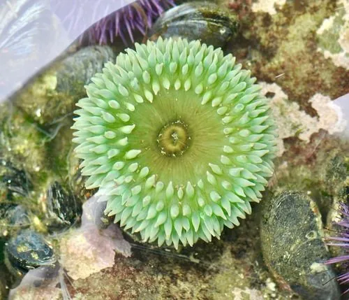

其他无脊椎动物 · 动物界
绿海葵 Anthopleura xanthogrammica

体柱粗壮呈鲜绿色、触手末端带蓝或粉色的大型海葵，栖息于北美太平洋岸潮间带，触手刺细胞可蜇伤皮肤。
- 分类
- 门刺胞动物门纲珊瑚虫纲目海葵目科海葵科属侧花海葵属
- 栖息环境
- 北美太平洋岸潮间带中下区至水深数米的岩池、礁石与桩柱
- 地理分布
- 北美洲太平洋沿岸，自阿拉斯加至加利福尼亚的岩礁海岸
- 保护级别
- 尚无保护级别；观赏采集需遵守当地规定，触手可蜇人
物种志
绿海葵的体柱粗壮，高可达三十厘米，直径可达二十厘米，是海葵中体型较大的种类。它的体柱呈鲜绿至黄绿色，这种绿来自体内共生的虫黄藻和绿藻；口盘周围环生数十至上百条粗短的触手，触手本身绿色，末端常带淡蓝、淡紫或粉色，排列成数圈，像一朵盛开的花。基盘宽大，能牢牢吸附在岩石上。
它分布于北美洲太平洋沿岸，从阿拉斯加到加利福尼亚的岩礁海岸，栖息在潮间带中下区至水深数米的岩池、礁石和码头桩柱上，喜欢浪击较强、水流通畅的位置。它是肉食性动物，用触手捕捉贻贝、蟹类、小鱼和海胆，靠刺细胞麻痹后送入口中，也吸收共生藻提供的养分。它雌雄异体，繁殖期在春夏，可进行有性生殖和纵向分裂。它的触手刺细胞能蜇伤人的皮肤，引起红肿刺痛，敏感者反应更明显，在潮间带观察或拍摄时应避免徒手触碰，被蜇后用海水冲洗并就医。它尚无保护级别，采集观赏个体需遵守当地规定。
形态与习性
- 体柱高可达三十厘米，直径可达二十厘米
- 颜色鲜绿至黄绿，来自共生藻类
- 触手数十至上百条，绿色，末端带蓝或粉色
- 栖息水层潮间带中下区至水深数米的岩礁
- 食性捕食贻贝、蟹类、小鱼与海胆
- 蜇伤刺细胞可致红肿刺痛，避免徒手触碰
趣味知识
- 它的绿色是体内共生藻给的，晒足太阳就能长得又大又绿。
- 它把整只贻贝吞进去，过一阵再把壳吐出来。
- 触手尖上那点淡蓝和粉色，在绿色的花丛里格外好看。